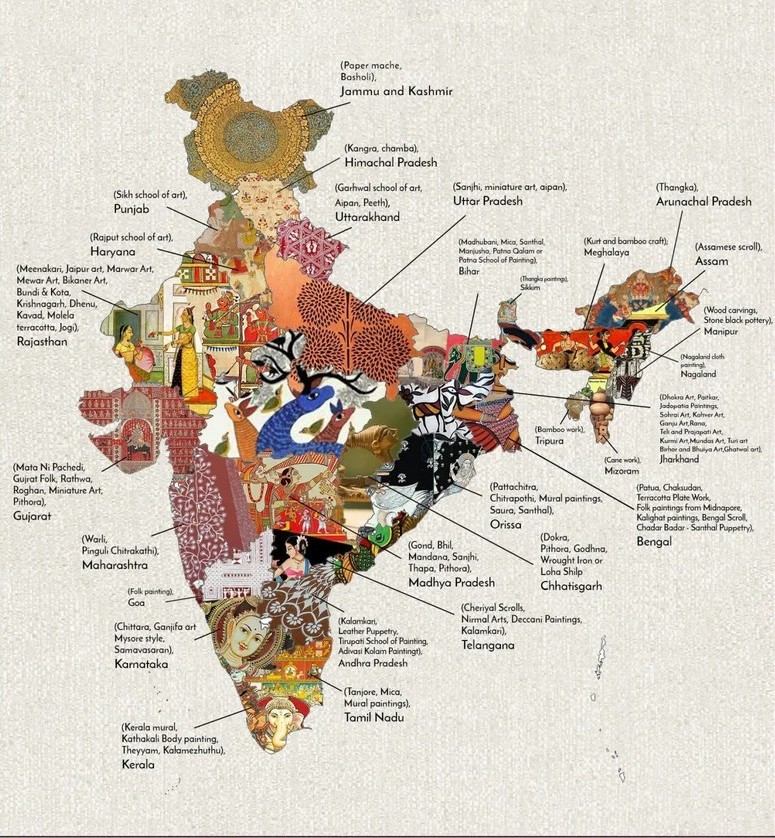

Step into a world where
every artifact tells a story!
every artifact tells a story!


Indian Arts


About Us
Born of Tradition, Made with Purpose
Kalakosh is a heartfelt tribute to India's rich artistic heritage — a digital sanctuary where
classical traditions, folk expressions, and timeless craft forms find new light. From the intricate
strokes of Madhubani to the bold weaves of Kanchipuram, we are a celebration of stories passed down
through generations — preserved in color, rhythm, and spirit.
Preserving Living Legacies
At Kalakosh, we curate, showcase, and support traditional Indian art forms — not just as artifacts,
but as living legacies. Our mission is to empower artisans, revive endangered crafts, and build a
community that honors authenticity over imitation. Every creation you see here carries the voice of
a region, the soul of a people, and the rhythm of centuries.
Join the Journey Back to Our Roots
In every thread, every brushstroke, and every rhythm, Kalakosh echoes the beauty of our heritage.
Together, let's keep the art alive.
Folk Art Map
